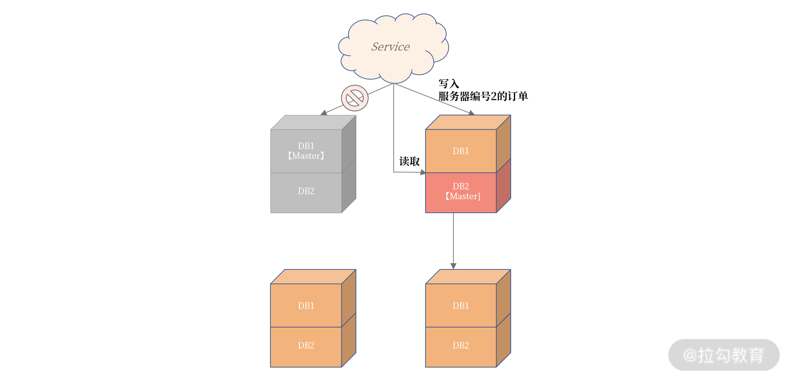

- 00 开篇词 从业务出发，开启海量 MySQL 架构设计.md.html
- 01 数字类型：避免自增踩坑.md.html
- 02 字符串类型：不能忽略的 COLLATION.md.html
- 03 日期类型：TIMESTAMP 可能是巨坑.md.html
- 04 非结构存储：用好 JSON 这张牌.md.html
- 05 表结构设计：忘记范式准则.md.html
- 06 表压缩：不仅仅是空间压缩.md.html
- 07 表的访问设计：你该选择 SQL 还是 NoSQL？.md.html
- 08 索引：排序的艺术.md.html
- 09 索引组织表：万物皆索引.md.html
- 10 组合索引：用好，性能提升 10 倍！.md.html
- 11 索引出错：请理解 CBO 的工作原理.md.html
- 12 JOIN 连接：到底能不能写 JOIN？.md.html
- 13 子查询：放心地使用子查询功能吧！.md.html
- 14 分区表：哪些场景我不建议用分区表？.md.html
- 15 MySQL 复制：最简单也最容易配置出错.md.html
- 16 读写分离设计：复制延迟？其实是你用错了.md.html
- 17 高可用设计：你怎么活用三大架构方案？.md.html
- 18 金融级高可用架构：必不可少的数据核对.md.html
- 19 高可用套件：选择这么多，你该如何选？.md.html
- 20 InnoDB Cluster：改变历史的新产品.md.html
- 21 数据库备份：备份文件也要检查！.md.html
- 22 分布式数据库架构：彻底理解什么叫分布式数据库.md.html
- 23 分布式数据库表结构设计：如何正确地将数据分片？.md.html
- 24 分布式数据库索引设计：二级索引、全局索引的最佳设计实践.md.html
- 25 分布式数据库架构选型：分库分表 or 中间件 ？.md.html
- 26 分布式设计之禅：全链路的条带化设计.md.html
- 27 分布式事务：我们到底要不要使用 2PC？.md.html
- 捐赠
17 高可用设计：你怎么活用三大架构方案？
我们前面学习了 MySQL 数据库复制的原理、优化，以及基于复制技术实现业务层的读写分离方案，这些内容都是为了铺垫 MySQL 数据库的高可用架构设计。因为复制是高可用的基础，但只用复制同步数据又远远不够，你还要结合自己的业务进行高可用设计。
同时，高可用也不仅仅是数据库的事情，你要从业务的全流程出发，思考怎么设计一个真正健壮的高可用架构。
现在，我们先来看看什么是高可用？为什么它如此重要。
高可用概念
首先，我们来看一下 wiki 上对高可用（High Availability）的定义：
High availability (HA) is a characteristic of a system which aims to ensure an agreed level of operational performance, usually uptime, for a higher than normal period.
从上面的描述来看，高可用（High Availability）是系统所能提供无故障服务的一种能力。 简单地说就是避免因服务器宕机而造成的服务不可用。
我们都知道，高可用是每个业务系统设计时，开发人员必须考虑的关键点。比如你的系统在发生不可用时，业务表现如何？用户能否容忍你的不可用时长？
而业界度量高可用能力也有统一标准：判断宕机时间，并以此计算出每年系统可用时间达到几个 9，来判断高可用架构是否健壮。具体如下表所示：

通常来说，系统至少要达到 4 个 9（99.99%），也就是每年宕机时间不超过 52.56 分钟，否则用户体验会非常差，感觉系统不稳定。
*99.99% = 1 - 52.56 / (365*24*60)*
不过 4 个 9 宕机 52 分钟对于生产环境的影响还是比较大，但是 5 个 9 对大部分系统来说要求又太高。所以一些云服务商会提出一个 99.995% 的可用性概念，那么系统一年的不可用时长为：
*不可用时长 = (1 - 99.995%)*365*24*60 = 26.28 (分钟)*
即一年最多的影响服务的时间为 26.28 分钟。
简单了解“高可用”有多么重要之后，接下来我们就来看一下，怎么设计高可用架构。
高可用架构设计
系统要达到高可用，一定要做好软硬件的冗余，消除单点故障（SPOF single point of failure）。
冗余是高可用的基础，通常认为，系统投入硬件资源越多，冗余也就越多，系统可用性也就越高。
除了做好冗余，系统还要做好故障转移（Failover）的处理。也就是在最短的时间内发现故障，然后把业务切换到冗余的资源上。
在明确上述高可用设计的基本概念后之后，我们来看一下高可用架构设计的类型：无状态服务高可用设计、数据库高可用架构设计。
无状态服务高可用设计
无状态的服务（如 Nginx ）高可用设计非常简单，发现问题直接转移就行，甚至可以通过负载均衡服务，当发现有问题，直接剔除：

上图中，当第一台 Ningx 服务器出现问题，导致服务不可用，Load Balance 负载均衡服务发现后，就可以直接把它剔除。
对于上层用户来说，他只会在几秒内的访问出现问题，之后服务就立刻恢复了。无状态的服务，高可用设计就是这么简单。
数据库高可用架构设计
所以，系统高可用设计，真正的难点、痛点不在于无状态服务的设计，而在于数据库的高可用设计，这是因为：
- 数据持久化在数据库中，是有状态的服务；
- 数据库的容量比较大，Failover 的时间相对无状态服务会更多；
- 一些系统，如金融场景的数据库，会要求数据完全不能丢失，这又增加了高可用实现的难度。
其实从架构角度看，数据库高可用本身也是业务高可用，所以我们要从业务全流程的角度出发，思考数据库的高可用设计。
我在这里提供了三种数据库的高可用架构设计方法，它们不但适用于 MySQL 数据库，也适用于其他数据库。
基于数据层的数据库高可用架构
基于数据层的数据库高可用架构，就是基于数据同步技术。当主服务器 Master 发生宕机，则故障转移到从服务器 Slave。
对于 MySQL 数据库来说，就是基于前面介绍的复制技术。对于 16 讲的读写分离架构，如果主服务器发生宕机，做如下操作就行了：

可以发现，我们原先的 Slave3 从服务器提升为了新主机，然后建立了新的复制拓扑架构，Slave2、Slave3 都连到新 Master 进行数据同步。
为了在故障转移后对 Service 服务无感知，所以需要引入 VIP（Virtual IP）虚拟 IP 技术，当发生宕机时，VIP 也需要漂移到新的主服务器。
那么这个架构的真正难点在于：
- 如何保障数据一致性；
- 如何发现主服务器宕机；
- 故障转移逻辑的处理；
我们可以通过 MySQL 提供的无损复制技术，来保障“数据一致性”。而“发现主服务器宕机”“处理故障转移逻辑”要由数据库高可用套件完成，我们 20 讲再来学习。
基于业务层的数据库高可用架构
第二种“基于业务层的数据库高可用架构设计”则完全基于业务实现，数据库只是用于存储数据。
当一台数据库主服务器不可用，业务直接写另一台数据库主服务器就可以了。我们来看一下这个架构：
从上图可以看到，Service 服务写入 Master1 主服务器失败后，不用等待故障转移程序启用主从切换，而是直接把数据写入 Master2 主服务器。
这看似是一种非常简单、粗暴的高可用架构实现方式，但能符合这样设计的业务却并不多，因为该设计前提是状态可修改。
比如电商中的订单服务，其基本逻辑就是存储电商业务中每笔订单信息，核心逻辑就是往表Orders 中插入数据，即：
INSERT INTO Orders(o_orderkey, ... ) VALUES (...)
这里 o_orderkey 是主键。为了实现基于业务层的数据库高可用，可以在主键生成过程中加入额外信息，比如服务器编号，这样订单的主键设计变为了：
PK = 有序UUID-服务器编号
这样的话，当写入服务器编号 1 时失败了，业务层会把订单的主键修改为服务器编号 2，这样就实现了业务层的高可用，电商中的这种订单号生成方式也称为“跳单”。
而当查询订单信息时，由于主键中包含了服务器编号，那么业务知道该笔订单存储在哪台服务器，就可以非常快速地路由到指定的服务器。
但这样设计的前提是整个服务的写入主键是可以进行跳单设计，且查询全部依赖主键进行搜索。
看到这里，你是不是觉得非常符合 NoSQL 的 KV 访问设计呢？别忘了前面介绍的 Memcached Plugin 哦。
融合的高可用架构设计
刚刚“基于业务层的数据库高可用架构”中，虽然通过跳单设计，可以实现写入业务的高可用实现。但这时订单服务的查询功能会受到极大影响。在上面的例子中，当发生宕机时，服务器编号为 1 的订单无法查询。
所以，我给出一种业务和数据层相结合的高可用设计。这个架构可以解决宕机后，查询服务受限的问题。其架构图如下所示：

上图中，将不同编号的订单根据不同的数据库进行存放，比如服务器编号为 1 的订单存放在数据库 DB1 中，服务器编号为 2 的订单存放在数据库 DB2 中。
此外，这里也用到了 MySQL 复制中的部分复制技术，即左上角的主服务器仅将 DB1 中的数据同步到右上角的服务器。同理，右上角的主服务器仅将 DB2 中的数据同步到左上角的服务器。下面的两台从服务器不变，依然从原来的 MySQL 实例中同步数据。
这样做得好处是：
- 在常态情况下，上面两台 MySQL 数据库是双活的，都可以有数据的写入，业务的性能得到极大提升。
- 订单数据是完整的，服务器编号为 1 和 2 的数据都在一个 MySQL 实例上。
- 更重要的是，这样当发生宕机时，Service 服务的写入不受到影响，写入服务器编号为 1 的订单通过跳单设计写入 DB2。
- 同时，对于订单读取也不会受到影响，因为数据都是一个实例上，如：

多活
总结
这一讲我们学习了系统设计中最为重要的高可用设计，这是业务系统设计中必须考虑的一点。生产环境没有高可用，是根本无法完成上线工作的。
这一讲我建议你反复阅读，加深自己对于高可用系统设计的理解。因为这些思想不限于 MySQL数据库，而是适用所有数据库以及业务系统。
最后，我来总结下今天的内容：
- 高可用是系统所能提供无故障服务的一种能力，度量单位是几个 9；
- 线上系统高可用目标应不低于 99.995%，否则系统频繁宕机，用户体验不好；
- 高可用实现基础是：冗余 + 故障转移；
- 无状态服务的高可用设计较为简单，直接故障转移或剔除就行；
- 数据库作为有状态的服务，设计比较复杂（冗余通过复制技术实现，故障转移需要对应的高可用套件）；
- 数据库高可用有三大架构设计，请务必牢记这几种设计。
© 2019 - 2023 Liangliang Lee. Powered by gin and hexo-theme-book.